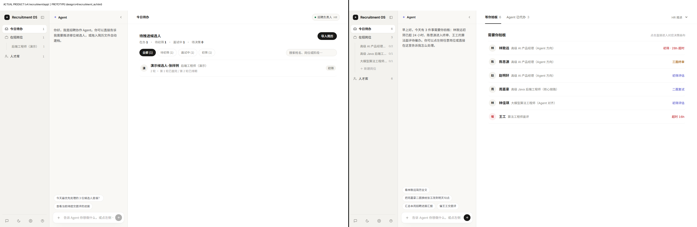
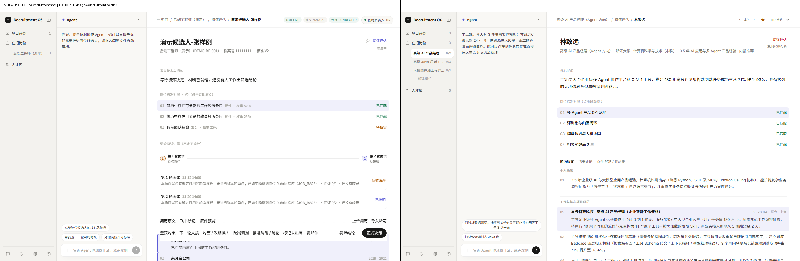
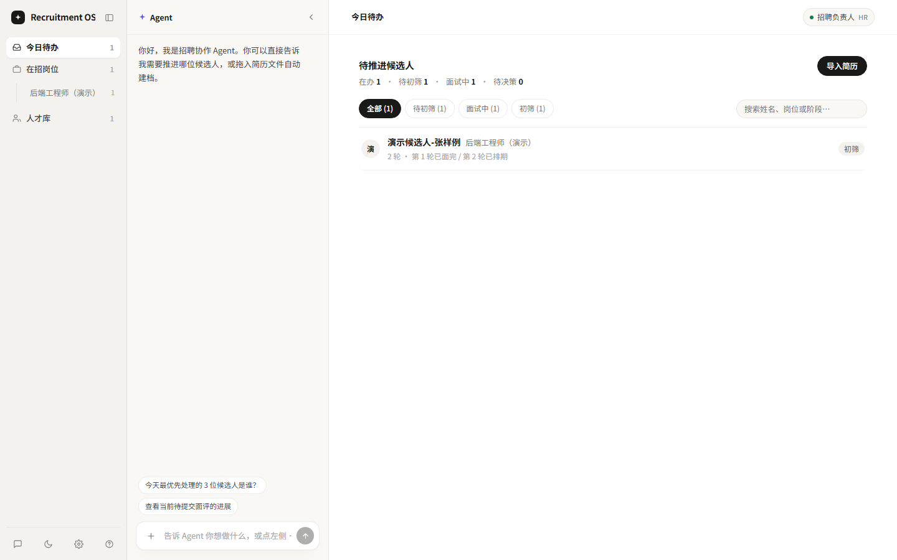
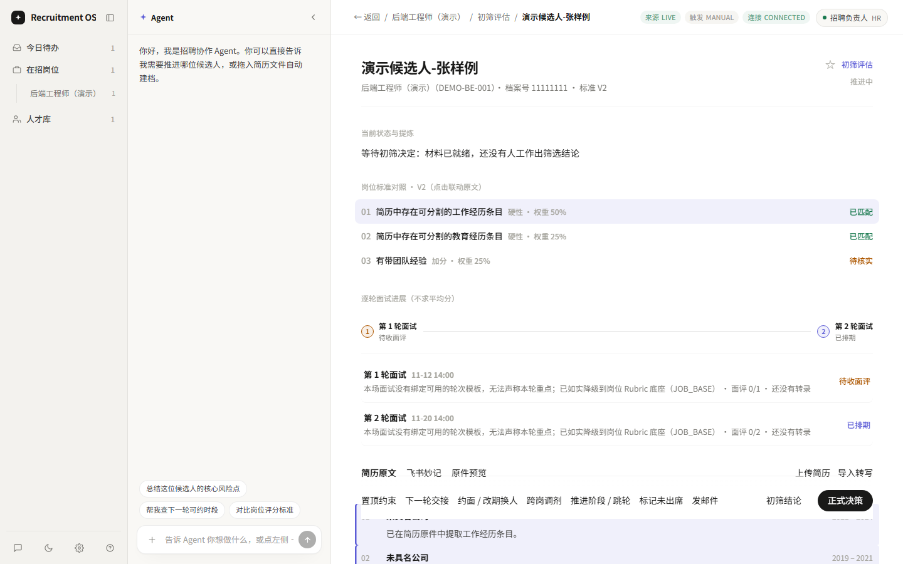
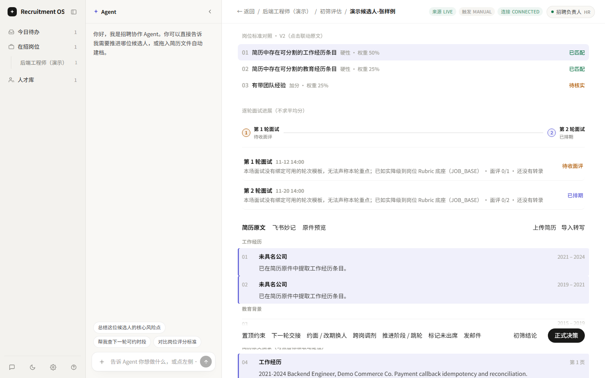
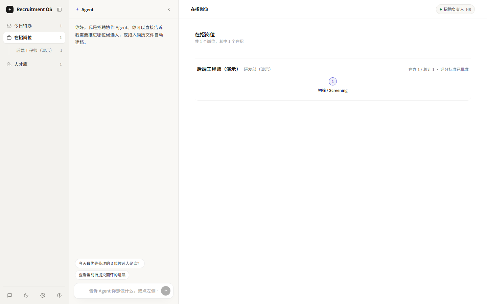
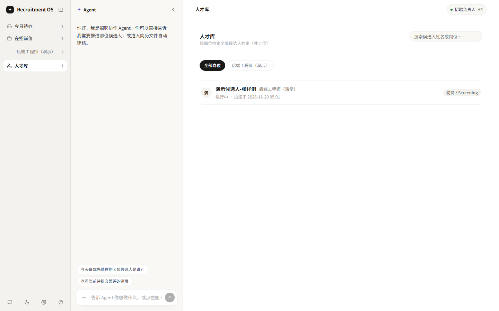
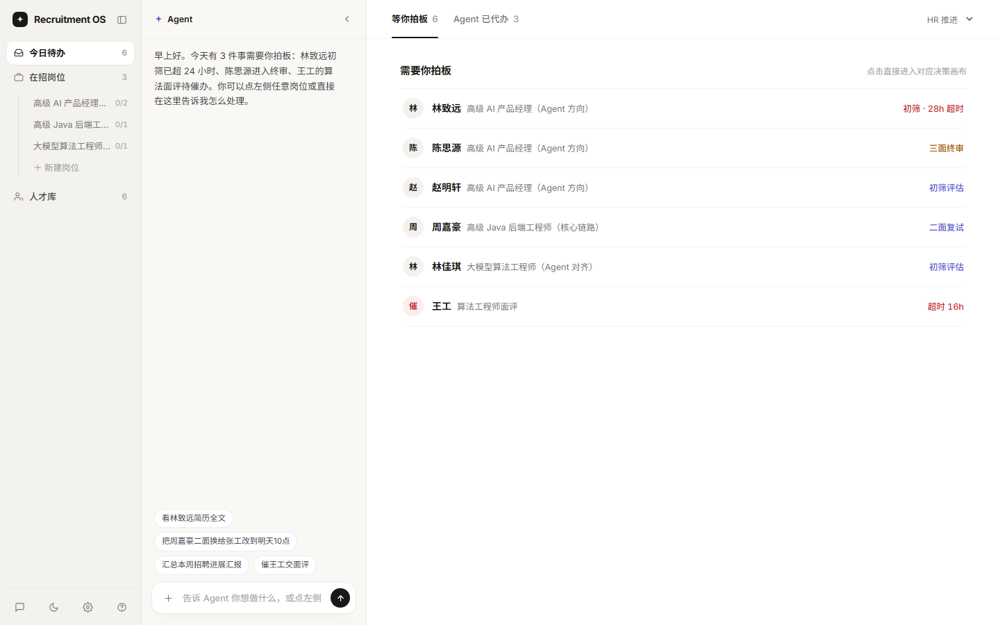
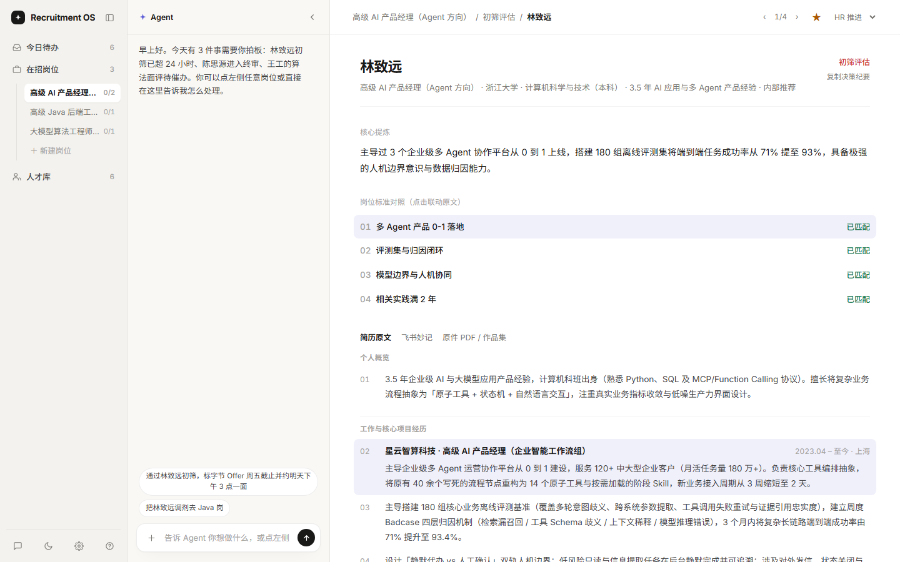

左/上 = 实际产品 /recruitment/app（预览库，1 个演示候选人）；右/下 = 定稿原型 design/v4/recruitment_os.html（假数据，6 个候选人）。同 1440×900。
用途：产品负责人认为两边 UI 有区别，前端窗口在云端看不到本机 Host；本页为逐条核对用。差异请标注为“数据差异 / 刻意简化 / 实现缺口”。









A 数据差异（非 bug）：候选人数/岗位数/姓名/轮次不同。B 待确认：队列双状态与角色切换、行内超时原因、新建岗位、对话早报/动作快捷词、候选人翻页/角色页签/纪要复制、整体字号密度。